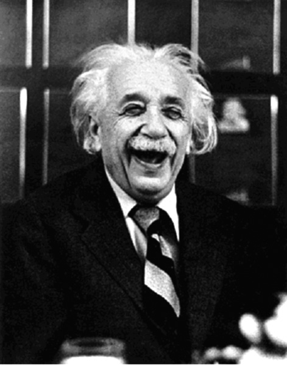
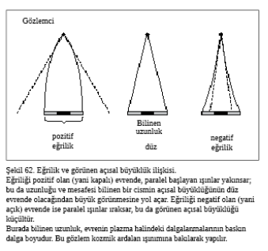
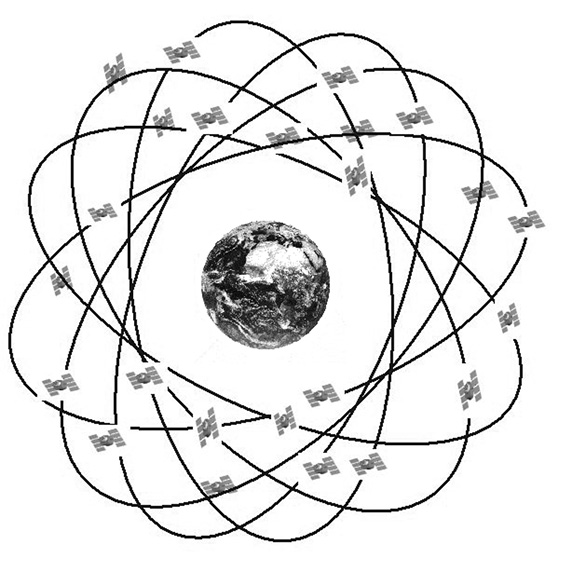
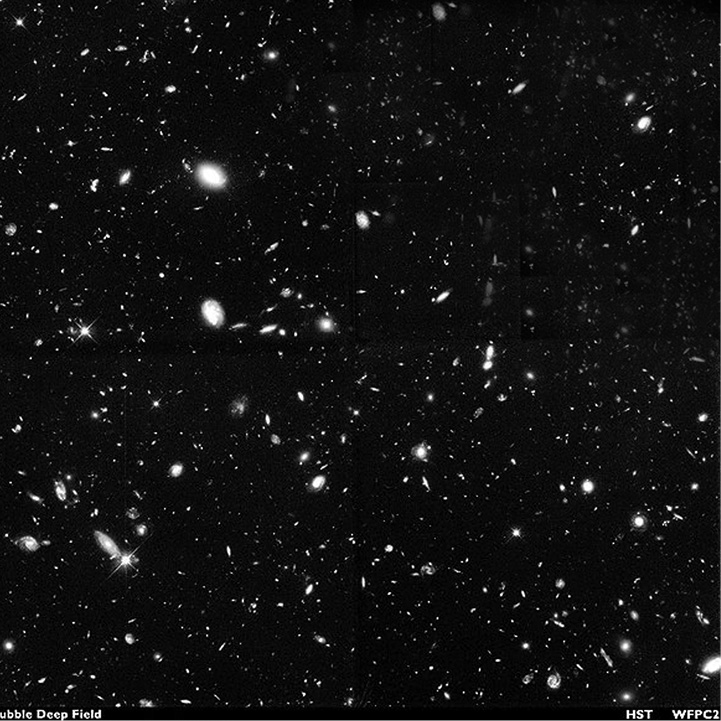

8. Bölüm - SONUÇ
48-Ne olacak bu evrenin hali?
- Ama bizim evrenin geleceğini konuşmadık zaten...
- Doğru, çünkü içeriği ile birlikte konuşmak istedim. Bunun için de önce kara delikleri konuşmamız gerekiyordu...
Evrenin Hubble parametresi, yani uzak gökadaların bizden uzaklaşma hızları ile mesafeleri arasındaki oran, ölçülebiliyor. Tabii ki bu ne kadar büyükse, evrenin genleşme eğilimi de o kadar yüksek; dolayısıyla, genleşmeyi durdurmak için evrende o kadar yüksek “çekim”, yani kütle gerek. Daha doğrusu yoğunluk...
- Yani evrenin yoğunluğu bir kritik değerin üstündeyse, genleşme gelecekte bir noktada durup tersine dönecek; yoğunluk o değerin altındaysa, genleşme hiç durmayacak, öyle mi?
- Madde-baskın evren için bu böyle...
- Neden şartlı onay? Hem bu şart ne demek? Galiba bu terim Einstein evreni çerçevesinde de geçmişti...
- Evrenin dinamiğinin genel göreliliğe uyduğunu konuşmuştuk (Soru 42); evrenin uzaysal boyutlarda üç farklı tür geometriye (kapalı-düz-açık) sahip olabileceğini de; evrenin kozmolojik ölçekteki içeriğini bir ideal akışkan olarak kabul ettiğimizi de; ideal akışkanların özelliklerinin basınç-yoğunluk ilişkisi ile betimlendiğini de...
- Yani evrenin ne olacağını “evrensel akışkanın” basınç-yoğunluk ilişkisi belirliyor...
- Evet. Soru 42’de bu tip iki ilişkiden de bahsedip, madde ya da toz (p = 0) ve ışınım (p = ρ/3) tanımlarını da yapmıştık. Basınç-yoğunluk ilişkisi, aynı zamanda, bu akışkanın yoğunluğunun evrenin genleşmesiyle nasıl değiştiğini de belirler. Basınç/yoğunluk oranı ne kadar büyükse, akışkanın yoğunluğu genleşmeyle o kadar hızlı azalır. Bunun açıklaması ise, daha yüksek basınçlı gazın genleşme ile daha fazla iş yapıp, daha fazla enerji kaybetmesi. Özelde, (a3ρ) büyüklüğünün pozitif basınç için zamanla küçüldüğünü, sıfır basınç için sabit kaldığını görürüz.
Evrendeki yoğunluğun büyük çoğunluğunun madde özelliğine sahip olması, evrenin madde-baskın olması olarak nitelendiriliyor. Ve genel görelilik bize, bahsettiğin gelecek alternatiflerinin ancak bu durumda geçerli olduğunu söylüyor.
- Peki, evrenimiz madde-baskın mı, değil mi?
- Yaklaşık 2000 yılına kadar, evrenin ilk birkaç yüz binyılı hariç öyle olduğunu düşünüyorduk; çünkü öyle görünüyor: Gökadaların oluşturduğu “akışkan”, madde özelliğine sahip ve kozmik ardalan ışınımının enerji yoğunluğu, maddeden çok az...
- 2000 civarında ne oldu da bu düşüncemiz değişti? Ne yönde değişti?
- Neden değiştiğini biraz sonraya bırakalım; ne yönde değiştiği konusunda da şimdilik şunu söyleyeyim: Geçmişin önemli bir kısmında evren madde-baskındı; ama şimdiki zaman ve gelecekten emin değiliz... Bu durumda, madde-baskın evren modellerini anlamaya çalışmakta hâlâ fayda var; özellikle bunların daha basit modeller olduğu düşünülürse...
Madde-baskın bir evrenin gelecekte ne olacağı ile ilgili İngilizce’de çok güzel bir kelime oyunu yapılabiliyor: DESTINY ↔ DENSITY. Yani “kader” (destiny), yoğunluk (density) tarafından belirleniyor. Gelecek aynı zamanda evrenin şekliyle de bire bir ilişkili çıktığından, bir diğer güzel ifade şekli de şu: Evren uzayda sonlu (yani kapalı) ise, zamanda da sonlu (yani genleşip, durup, çökecek); uzayda sonsuz (yani açık) ise, zamanda da sonsuz (sonsuza kadar genleşecek).
- İlk birkaç yüz bin yılda evren madde-baskın değilse, nasıldı?
- Artık kozmolojinin standart modelinin parçası olan Büyük Patlama modeline göre (Soru 43’ü anımsa) ilksel evren çok sıcaktı; o kadar ki, tüm parçacıklar ışık hızına yakın hızlarla hareket ediyorlardı. Böyle bir durumda, parçacıklar kütleli bile olsalar, basınç-yoğunluk ilişkisi ışınım gibi olur.
- Yani ilksel evren ışınım-baskın idi...
- Bunu görmenin bir yolu daha var. Işınımın basınç/yoğunluk oranı maddeninkinden yüksek olduğu için, evrenin genleşmesi ile yoğunluğu maddeninkinden daha hızlı düşüyor. Işınımın bugünkü düşük enerji yoğunluğu, evrenin genleşmesiyle düşmüş hali. Geçmişe gidildikçe yoğunluk artıyor, ama ışınımın yoğunluğu maddeden daha hızlı artıyor. Bir de fotonların madde parçacıklarına korkunç sayısal üstünlüklerini (gene Soru 43’ü anımsa) düşününce...
- Geçmişe giderken bir noktada ışınım enerji yoğunluğu maddeninkini geçiyor...
- Evet. İşin ilginci, bu değişim noktası, evrenin opaklıktan şeffaflığa geçiş, yani kozmik ardalan ışınımının serbest kalma zamanına aşağı yukarı denk geliyor... Bu aşamadan sonra evren madde-baskın.
20. yüzyılın sonları yaklaşırken, madde-baskın olduğu düşünülen evren hakkındaki belki de en önemli soru, geleceğinin ne olacağı idi. Evrenimiz bu üç modelden hangisine uyuyordu? Kapalı mı, açık mı? Büyük Patlama’nın tersi olan bir Büyük Çöküş’te cehennemi sıcaklıklara mı ulaşacak, sonsuza kadar genleşip, sonsuza kadar soğuyacak mı? Ateş ile mi, buz ile mi bitecek?
- Bunun için yoğunluğu ölçmek gerek galiba...
- Evet... Ancak yıldızların evrendeki dağılımlarına bakıldığında, onların kritik yoğunluğun ancak yüzde birkaçını oluşturabildiği görüldü—
- Bir dakika, bir dakika... Kritik yoğunluğu nereden biliyoruz?
- Bu sorunun ikinci paragrafından anlaşılacağı gibi, Hubble parametresinden hesaplanabiliyor.
Sonra bilimciler kendilerine yıldızların kütleyi ne kadar iyi temsil ettiğini sordular. Zaten uzaklardaki tüm yıldızlar görülemiyor. Ancak, Soru 46’da konuştuğumuz gibi, bir cismi görmeden de, etrafında hareket eden cisimlerin hareketine bakarak onun kütlesini ölçebiliyoruz... Bu yöntem kullanılınca, gökadaların çoğunda görünenden çok daha fazla kütle olduğu görüldü. Hatta görmek derken, yalnızca görünen ışığı kastetmiyoruz, elektromanyetik tayfın hiçbir kısmında görünmeyen maddeler bunlar. Yani ne radyo dalgası yayıyor, ne kızılötesi, ne X ışını, hiçbir şey... İşte bu kendisi görülemeyen ama etkisi görülen maddeye “karanlık madde” dendi.
Şekil 60. Kozmolojik süpernova gözlemleri ve evrenin genleşmesinin ivmesi.
Bu a(t)–t grafiğinde t0 şimdiki zamanı, a0 da evrenin ölçek faktörünün şimdiki değerini gösteriyor. Bir süpernovanın ölçülen kırmızıya kayması, bize doğrudan ölçek faktörünün patlama anındaki değerini veriyor; yani grafikte düşey eksende nerede olduğumuzu söylüyor. Ancak bu anın ne kadar geçmişte olduğu, grafikten görüldüğü gibi, a(t) fonksiyonunun şekline bağlı. Evrenin ivmesi sıfırsa (doğru çizgi) patlama tII anında; evren madde-baskın modellerin öngördüğü gibi yavaşlıyorsa, patlama daha sonraki bir tIII anında olmuştur. Patlama günümüze ne kadar yakınsa, ışık o kadar az yol gideceğinden, o kadar parlak olarak gözlenmesi beklenir.
Ancak, ölçülen parlaklıklar tII, yani sıfır ivme için beklenenden daha düşük çıktı. Bu da patlamanın tII’den önceki bir tI anında olduğu, yani genleşmenin ivmelendiği anlamına gelir.
Şekil 60. Kozmolojik süpernova gözlemleri ve evrenin genleşmesinin ivmesi. Bu a(t)–t grafiğinde t0 şimdiki zamanı, a0 da evrenin ölçek faktörünün şimdiki değerini gösteriyor. Bir süpernovanın ölçülen kırmızıya kayması, bize doğrudan ölçek faktörünün patlama anındaki değerini veriyor; yani grafikte düşey eksende nerede olduğumuzu söylüyor. Ancak bu anın ne kadar geçmişte olduğu, grafikten görüldüğü gibi, a(t) fonksiyonunun şekline bağlı. Evrenin ivmesi sıfırsa (doğru çizgi) patlama tII anında; evren madde-baskın modellerin öngördüğü gibi yavaşlıyorsa, patlama daha sonraki bir tIII anında olmuştur. Patlama günümüze ne kadar yakınsa, ışık o kadar az yol gideceğinden, o kadar parlak olarak gözlenmesi beklenir. Ancak, ölçülen parlaklıklar tII, yani sıfır ivme için beklenenden daha düşük çıktı. Bu da patlamanın tII’den önceki bir tI anında olduğu, yani genleşmenin ivmelendiği anlamına gelir.
- Bunlar kara delik olmasın?
- Evet, kara delikler (en azından etraflarından madde yutmuyorlarsa) karanlık madde özelliği gösterebilir. Bazı diğer tip soğumuş ölü yıldızlar (beyaz cüceler veya nötron yıldızları)... Çekirdek kaynaşma tepkimeleri başlatacak kadar yüksek sıcaklık ve basınç oluşturamamış, dolayısıyla yıldız olamamış kütle birikimleri, yani kahverengi cüceler... Bunlar da ışık vermeyebilir...
- Tamam o zaman... Karanlık madde bunlar olabilir.
- İyi de, onlar veya değil, ne kadar olduğunu bilmemiz gerekiyor. Hani bize evrenin yoğunluğu lazım ki geleceği tahmin edelim... İşin kötüsü, karanlık maddeyi “görmemizin” tek yolu olan yörüngelere bakmak yöntemi, yörüngeden daha büyük bir ölçekte düzgün dağılmış karanlık madde var ise dahi, bize göstermiyor; Hasandağ’ın tepesinden bakarak Konya Ovası’ndan yüksekliğini kestirebileceğin, ama deniz seviyesinden yüksekliğini kestiremeyeceğin gibi... Bu yüzden ölçüm ölçeği büyüdükçe, karanlık madde yoğunluğu da büyüyor. En büyük ölçeklerde bu rakam, kritik yoğunluğun yüzde 20’sine yaklaşıyordu.
- Peki ne yapacağız?
- Hani 43. Soru’nun sonunda, erken evrendeki nükleer tepkimelerle ilgili hesaplar ile ölçümlerin belli bir foton/baryon sayıları oranı aralığı için uyuşabildiğini konuşmuştuk. Bu bize evrendeki baryon yoğunluğu hakkında bir fikir verir. 27. Soru’da konuştuğumuz gibi, baryon sayısı korunur. En düşük kütleli baryonlar da protonlar ve nötronlardır, dolayısıyla eninde sonunda evrende ilk baryon yoğunluğuyla aynı sayısal yoğunlukta proton ve nötronlar kalır. Bildiğimiz gibi, normal madde bunlar ve elektronlardan oluşur; elektronların kütlesi de proton ve nötronlardan çok küçük olduğuna göre, normal maddenin evrendeki kütle-enerji yoğunluğu hakkında fikir sahibi olmuş oluruz.

- Vee...
- Bu hesaplar da ilkönce bize normal madde yoğunluğunun, kritik yoğunluğun en fazla yüzde 20’si olabileceğini söyledi. Yani bir bakıma hâlâ karanlık maddeyi -kıl payı da olsa- adeta kararmış normal madde olarak açıklayabilirdik. Ancak, bir de şişen evren kuramı var ki, bize evrenin yoğunluğunun kritik değere eşit olması gerektiğini söylüyor.
- Bu şişen evren, Büyük Patlama’ya alternatif mi?
- Hayır, yama. Şöyle ki, Büyük Patlama modelini geçmişe doğru takip edersek, bazı tutarlılık sorunları çıkıyor; bu sorunların olmaması için evrenin, çok erken zamanlarda farklı bir evreden geçmiş olması gerektiği düşünülüyor. Şişen evren kuramı işte bu evre nasıl başlar, nasıl biter, sorunları nasıl çözer, onu anlatıyor.
- Nedir bu Büyük Patlama’nın tutarlılık sorunları?
- Birincisi, ufuk sorunu. Ufuk uzaklığı ya da uzunluğu diye, görebildiğimiz mesafeye diyoruz; mantıklı değil mi? Bu da bir ışık sinyalinin Büyük Patlama’dan bu yana evrende gidebileceği mesafedir. Şimdi, kozmik ardalan ışınımını gökyüzünde iki zıt yönde gözlemlersek, gördüğümüz noktalar—
- ...bizden neredeyse bir ufuk uzaklığı mesafededir.
- Çok iyi... ardalan ışınımını tam Büyük Patlama’dan gelmiyor çünkü. Bu noktalar zıt yönlerde oldukları için birbirlerinden yaklaşık iki ufuk uzaklığı mesafesindeler. Şimdi... Ama ufuk uzaklığı doğal olarak zamanla büyüyor. O ışık sinyalleri yola çıktığı zaman, ufuk uzaklığı çok daha küçüktü, dolayısıyla bu iki nokta o zamanın ufuk uzunluğuna göre birbirlerinden çok uzaktaydılar.
- Ama o iki nokta da birbirine daha yakındı, dolayısıyla belki gene yaklaşık iki ufuk uzaklığı mesafede olamazlar mı?
- Hayır. Noktalar arası uzaklık, yalnızca evrenin genleşmesi ile artar; ama ışık, evrende seyahat ederken noktaları bir bir geçtiği için ufuk uzaklığı daha hızlı artar. Ufuk sorunu şudur: İki sistemin aynı sıcaklığa gelmesi ancak aralarında ısıl etkileşim olması durumunda mümkündür. Ancak herhangi bir etkileşim en fazla ışık hızı ile ilerleyebilir, dolayısıyla bir nokta, kendisinden en fazla ufuk uzaklığı mesafesindeki noktaları etkileyebilir. Öyleyse bahsettiğimiz noktalar, yani aralarında yüzlerce ufuk uzaklığı bulunan iki nokta, nasıl etkileşip aynı sıcaklığa gelmişlerdir?
- Hmm... Bu bir. İkincisi?
- İkincisi, düzlük sorunu. Gösterilebiliyor ki, madde-baskın evrenin yoğunluğu, genleştikçe kritik yoğunluktan uzaklaşır. En basitinden, kapalı evrenin duraklama

anında kritik yoğunluğu sıfıra iner, yoğunluğu ise sıfır değildir, yani yoğunluk/kritik yoğunluk oranı sonsuza çıkmıştır. Yoğunluk/kritik yoğunluk oranı şu anda birden çok farklı değil; bu sorunların artaya konduğu 1970’ler sonlarında bu oranın 0,1 ile 2 arasında olması gerektiği biliniyordu; yani 10-8 veya 108 değil. Öyleyse geçmişte bire daha yakın olmuş olması gerekir. Özelde, Büyük Patlama’ya adını veren termonükleer tepkimeler zamanında bu oranın birden farkının ancak virgülden sonra 10-11. hanede olacağı hesaplanabiliyor. Düzlük sorunu şudur: Neden başlangıçta yoğunluk kritik değere bu kadar yakındı? Yani evren düz olma durumuna neden bu kadar yakındı?
- Bu ikincisi; ilginç... Sonra?
- Üçüncüsü, monopol sorunu. Bu da, genelçekim haricindeki üç etkileşimi birleştirme iddiasındaki Büyük Birleştirme Kuramları’nı ilksel evrene uygulayınca ortaya çıkıyor. Bu kuramların öngörüsüne göre, etkileşimlerin özellikleri sıcaklıkla değişir ve yeterince yüksek sıcaklıklarda bu üç etkileşim ayırt edilemez hale gelir; yani birleştirme, yüksek sıcaklık ile gerçeklenir. Hatta bu değişim, buzun erimesi gibi bir faz geçişi şeklinde olur. Kuramlar gösteriyor ki, bu faz geçişi sırasında manyetik monopol dediğimiz kararlı yapıların oluşması gerekiyor. Bunlar, aynen elektrik yüklü nesnelerin elektrik alan çizgilerinin kaynağı olmaları gibi, manyetik alan çizgilerine kaynaklık yapacak nesneler ve elektromanyetizmanın temel yasaları olan Maxwell Denklemleri, kolayca bunları da betimleyecek hale getirilebilmesine rağmen, evrenimizde bunlardan yok. (Yani Maxwell Denklemlerinde ilgili terimler sıfır.)
Öte yandan, bu manyetik monopollerin kütleleri epey yüksek, dolayısıyla ısıl dengede (aynı sıcaklıkta) oldukları diğer parçacıklar hâlâ hızlı hareket edip, ışınım gibi davranırken, onların çok daha erkenden yavaşlayıp, madde gibi davranmaları gerekir. Bu da, evrendeki diğer parçacıkların yoğunluğunun monopollerinkinden daha hızlı azalması, yani zamanla monopollerin baskın hale gelmesi demektir. Neden günümüz evreninde monopol görmüyoruz?
- Pekiii...?
- Çözüm önerisi, monopol sorununa neden olan faz geçişi kavramından çıktı. Daha dikkatli incelemeler gösterdi ki, eğer bu faz geçişi evrenin her yerinde aynı anda olmaz ise, bazı bölgeler bu faz geçişini gecikmeli yaparlar ise -ki suyun donması vb. gibi daha günlük hayata yakın faz geçişlerinde de bu gözlemlenebiliyor- bu geciken bölgelerdeki boşluğun bir basıncı ve yoğunluğu varmış gibi oluyor. Üstelik, basınç-yoğunluk ilişkisi de çok garip: p = -ρ. Bu ilişki, evrenin çok hızlı, a(t)’nin (aşağı yukarı) üstel fonksiyon olduğu bir şekilde genleşmesine yol açıyor. Tabii ki bu, faz geçişi tamamlanana kadar sürüyor, sonra ışıma-baskın genleşmeye geri dönülüyor. Şişme evresi diye bu evreye deniyor.
Eğer bu evre, a(t)’nin en az 1030 misli büyüyeceği kadar sürerse, üç sorun birden çözülüyor—
- 1030 mu? Bu çok büyük bir rakam...
Aslında kullanılan rakam 1050. Bunun için 10-32 saniyelik bir sürenin yeterli olduğu hesaplanıyor.
- Sorunlar nasıl çözülüyor?
- Şişme, çok küçük bir bölgeyi çok büyük hale getiriyor; ama orijinal bölge çok küçük olduğu için, ısıl dengeye gelmiş oluyor. Rakam vermek gerekirse, şişme öncesi ufuk uzunluğu, 10-26 m gibi. Şişme, bu bölgenin büyüklüğünü 1024 m yapıyor. Öte yandan, evrenin bizim gözleyebildiğimiz kısmının şişme sonrası büyüklüğü 10 cm.
- Bu, başta bahsettiğimiz iki noktanın ısıl dengesini açıklıyor, yani ufuk sorununu çözüyor. Ya diğerleri?
- Eh, şişen bir balon daha düz hale gelir, değil mi? Ayrıca bu korkunç büyüme, şişme öncesi oluşabilecek monopollerin sayısal yoğunluğunu da korkuç azaltır.
- 10-150 ile çarpıyor... Böylece düzlük ve monopol sorunları da çözülüyor... Güzelmiş...
- Peki, Şişen Evren kuramı doğruysa, evrenin yoğunluğunun kritik değere eşit ya da çok yakın olması gerekir
- Öyleyse, ilksel nükleer tepkime hesapları da bize normal madde en fazla kritik yoğunluğun yüzde 20’sidir diyorsa, evrenin içeriğinin yüzde 80’i bilmediğimiz bir madde mi?
- En az yüzde 80’i, belki yüzde 97’si. Yaklaşık 1980-2000 arası böyle düşünülüyordu. Bu, neredeyse skandal boyutlarında bir sorun; siz evrendeki maddenin temel yapıtaşları üzerine deneyler yapıyor, uzun uzun kuramlar geliştiriyor, bir “parçacık fiziği standart modeli” oluşturuyorsunuz; ama model, evrendeki parçacıkların (aslında kütlenin) belki de ancak yüzde 3’ünü açıklıyor! Bu sorun, en büyük—
- 2000 civarında neyin değiştini hâlâ söylemediniz yalnız...
- Geliyorum, geliyorum... Ne diyordum; bu sorun en büyük ölçekteki fizikle en küçük ölçekteki fiziği bir araya getiriyor. Düşünsene, kozmolojide gökadaları atom gibi kabul ediyoruz; parçacık fiziğinde atomun büyüklüğünün milyonda birinden daha küçük ölçeklerle uğraşıyoruz...
Tabii ki buradan nereye gideceğimiz açık. Madem parçacık fiziğinin standart modeli karanlık maddeyi açıklayamıyor, biz de standart modelin dışına bakarız... Zaten parçacık fiziği kuramcıları çeşitli sebeplerden standart modelin çeşitli genellemelerini düşünmüşlerdi.
- Neden? Standart modelde bir yetersizlik mi vardı ki?
- Bu biraz da bakış açına bağlı... Örneğin, modeli yeterince basit bulmayanlar var, dört etkileşim olması anlamında. Bu dört rakamını küçültebilir miyiz acaba? (Aslında zaten elektrozayıfla üçe indi 1980’lerden sonra.) Bir “birleşik alan kuramı” geliştirebilir miyiz? Ya da modeli veya bazı bileşenlerini “güzel” bulmayanlar, “zorlama” bulanlar var; bu da bakış açısına bağlı tabii. Ve son olarak, acaba gözlenmemiş (ve yakın gelecekte gözlemlenebileceğini umabileceğimiz) ne tür parçacıklar var olabilir?
En büyük ile en küçüğün fizikleri burada yakınsıyor işte: Bu motivasyonlarla üretilen çeşitli kuramların içerdiği parçacıkların kararlı olduğu düşünülenleri, ön plandaki karanlık madde adayları oldu; öte taraftan karanlık madde problemi, standart modeli genelleştiren parçacık kuramları üretmenin estetik ve felsefi kaygılarının ötesinde yeni bir motivasyonu olarak kabul edilmeye başlandı.
- Nedir bu karanlık madde adayları?
- Kozmik ardalan fotonları gibi, bir de nötrino ardalanı vardır. Standart modelde kütlesiz olarak düşünülen nötrinoların küçük de olsa bir kütlesi olması, evrenin yoğunluğuna epey katkıda bulunabilir... İlk düşünülen karanlık madde adaylarından biri bu oldu; ancak nötrinoların, evrende gökadaların oluşum sürecinde gerekli yerel ölçekli kümelenmeyi yapmak için bile fazla hızlı olduğu sonucuna varıldı. (Işığa yakın hızlarda hareket ettikleri için yerel yoğunluk fazlalıkları onları tutamıyor.) Aslında yakın zamanda Güneş fiziğinden, üç nötrino türünden en az birinin kütleli olduğu anlaşıldı, ancak bu sonuç hâlâ geçerli.
Bir diğer düşük kütleli aday, axion denen parçacıklar. Nereden icap ettiğine giremeyeceğim ama, düşük kütlelerine rağmen bu parçacıklar (varsalar) hızlı değiller. 2010 itibari ile CERN’de CAST adlı (hızlandırıcılarla ilgisi olmayan) deneyde, Güneş’ten gelmesi olası axionlar gözlemlenmeye çalışılıyor.
Olası yüksek kütleli karanlık madde parcacıkları WIMP diye adlandırılıyor. WIMP, İngilizce “weakly interacting massive particle”, “zayıf etkileşen kütleli parçacık” ifadesininin kısaltması.
- Zayıf etkileşmek derken?
- Etkileşimin şiddetinin genelde düşük olmasından bahsediliyor tabii. Soruyu sorduğuna göre tahmin etmiş olduğun gibi, standart modeldeki “zayıf etkileşim” kastedilmiyor—
- Çünkü neredeyse tanım gereği, karanlık madde parçacıkları standart modelin dışında olmak durumundalar... Peki yüksek kütleli demek ne demek? Neyden yüksek kütleli?
- WIMP’ler genellikle protondan epey yüksek kütleli olarak düşünülüyor. Ancak, aslında önemli olan parçacığın kütlesi değil, onların oluşturduğu gazın eşdeğer sıcaklığı, yani gelişigüzel parçacık hızlarının mertebesi. Yüksek hızlarla hareket eden parçacıkların hem basınç-yoğunluk ilişkileri ışınım ile benzeşiyor, hem de hızları ve düşük etkileşimleri sayesinde kümelenme bölgelerinden kaçıyorlar; yani kümelenmeye katkıda bulunmuyorlar. Düşük hızlarla hareket edenler ise, hem basınç-yoğunluk ilişkileri bakımından toz ile benzeşiyorlar, hem de kümelenme bölgelerinde kendileri de birikerek kümelenmeye, yani gökada ve daha büyük ölçekli yapıların oluşumuna katkıda bulunuyorlar. Bunlara sırasıyla sıcak ve soğuk karanlık madde deniyor.
- Yani kütleli nötrinolar sıcak karanlık madde, axionlar ve WIMP’ler soğuk. Ama hâlâ karanlık madde yoğunluğu hakkında bir şey söylemediniz... Şişen evren kuramının söylediği gibi kritik yoğunluğa ulaşıyor mu? Biliyor muyuz?
- İşte bu soruyu cevaplamak için 2000 yılına doğru—
- Oh be, nihayet!...
- ... evrenin genleşme ivmesini (daha doğrusu i/a oranını) ölçmeye yönelik gözlemler yapıldı. Madde-baskın bir evrende bu bize yoğunluğu verir. Bu gözlem için çok çok uzak süpernovaların gözlenen ışıma şiddetleri ölçüldü—
- Süpernovaların kozmolojiyle ilgisi ne?
Bunlar Ia tipi süpernovalar, kara delik bağlamında konuştuklarımız değil. Bunlar çok özel koşullarda meydana gelen olaylar ve bu kadar özel olmak, onları standart mum (Soru 41) yapıyor. Kozmolojiyle ilgileri de bu. Yeterince uzak mesafeden görülebilen standart mumların varsa, evrenin geçmişteki genleşme hızıyla ilgili bilgi elde edebilirsin...
- Biraz düşüneyim... 20. Soru’da da biraz konuştuğumuz gibi, uzağa baktığımız zaman, geçmişe de bakmış oluyoruz... Mesafeyi standart mum yöntemiyle belirlersek, ışık hızına bölerek baktığımız cismin ne kadar önceki halini gördüğümüzü de biliriz. Doppler kayması da bize hızı verir; değil mi?
- Tam olarak böyle değil ama, aynı kapıya çıkıyor. Bu kadar uzak süpernovaları gözlemlemek teknolojik olarak yakın zamanda mümkün oldu ve bunlar hakikaten çok uzak. Bir düşün: Evrenin bir yerinde bir beyaz cüce, partneri ile etkileşimi sırasında patlıyor ve etrafına çok güçlü elektromanyetik dalgalar saçıyor. Bu esnada, evrenin uzak bir yerinde, hatta belki de Büyük Patlama’dan beri ışığın gidebileceği mesafeden de uzakta bir sarmal gökadanın diskindeki kollardan birinin içinde bir gaz ve toz bulutu, çekim etkisiyle büzüşmekte. Dalgalar etrafa yayılmaya başlıyor, on binlerce yıl sonra, gökadanın gaz ve toz bulutlarında soğurulmayan kısmı, gökadalararası boşluğa çıkıyor; en yakın gökadaya ulaşmaları birkaç milyon yıl sürüyor. Onu ve birçok başkalarını geçiyorlar, milyon yıllar on milyonlara, yüz milyonlara uzuyor; gökadalar uzun bir otomobil yolculuğunun mesafe tabelaları sanki: Gümüşhacıköy 23, Samsun 150 km... Büzüşen bulutta ise, başlangıçta var olan küçük yoğunluk farklılıkları, daha yoğun olan kısımların etraflarını daha kuvvetli çekmesi sayesinde yavaş yavaş belirginleşiyor, daha da belirginleşiyor; ve bulut, ilk halinden yüzlerce kez yoğun onlarca parçaya ayrılıyor. Dalgalar evrenin içinde yolculuklarına devam ediyorlar. Bulutun içinde artan yoğunlukların etkisiyle olaylar hızlanıyor. Dalgaların iki gökadanın arasındaki mesafeyi geçişi kadar bir sürede, yani yıldızına yakınca bir gezegenin yörünge periyoduna göre çok uzun, ama dalgaların evren içindeki yolculuğuna göre çok kısa bir sürede, bulut parçaları daha da yoğunlaşıyor ve belki tekrar parçalanıyorlar; yoğunlaşmanın sonucu olarak önce hafiften ısınmaya başlıyorlar, sonra merkezleri atomları parçalayacak ve ışığın hareketine izin vermeyecek kadar ısınıyor, bu da büzüşmenin getirdiği ısının kaçmasını engelleyip, ısınmayı hızlandırıyor. Sonunda bulut parçalarının yüzeyleri, normal bir yıldız gibi ışık verecek sıcaklığa ulaşıyor, yani önyıldız oluyorlar; ışık basıncının büzüşmeye karşı koyması yüzünden olaylar tekrar yavaşlıyor. Önyıldızlar, ışımaları için gerekli enerjiyi çekim potansiyelinden elde ederek büzüşürken, dalgalar her yönde onlarca gökadayı daha geçiyor. Önyıldızların yeterince kütleye sahip olanları sonunda merkezlerinde yeterli yoğunluk ve ısıya ulaşıyorlar ve hidrojen çekirdekleri kaynaşmaya başlıyor! Yıldızlar doğuyor! Bunlardan en az birinin çevresinde oluşmuş diskin içinde yine dalgaların yolculuğuna göre kısa bir sürede gezegenler oluşuyor; oluşumlarındaki şiddetli çarpışmaların etkisiyle sıcaklar. Ama zaman çok şeyi soğutabiliyor. Dalgalar her yönde binlerce gökadayı çöl rüzgârının kumulları geçtiği gibi geçerken, gezegenler soğuyor ve en az birinde, yaşam ortaya çıkıyor. Ancak şartlar zor, gelişme yavaş... Karmaşık bir ekosistem oluşana kadar dalgalar yine gökada aralıklarının binlerce katı mesafeyi geçiyorlar; geldikleri uzun yoldan dolayı zayıflamalarına rağmen hâlâ sıradan bir yıldızın komşu yıldızdan görünen ışığından çok daha parlaklar, o kadar büyük bir enerjiyle çıkmışlardı yola. Gezegende yaşamın hızlanan gelişimi, dört-beş kez felaketlerle sekteye uğruyor. Ancak yaşam, sıkı sıkıya sarılıyor kendine, her darbeden sonra tekrar ayağa kalkıyor. Dalgaların yine binlerce gökada aralığı geçtiği uzun bir dönemden sonra, dalganın küresel cephesi gezegenin olduğu gökadaya yaklaşırken, gezegen ekosisteminin ürettiği en büyük hareketli canlıları da içeren aile, bir göktaşı çarpması sonucu yok oluyor ve onların yerine başka bir aile gelişmeye başlıyor. Bu yeni ailenin içinden -gezegenin tarihinde ilk kez- akıllı bir tür çıktığında, dalgalar sarmal gökadanın yıldızları arasında ilerlemeye başlamış oluyor. Sonraki süre içinde bu tür, gezegenin hâkimiyeti için önce diğer türlerle, sonra kendi içinde savaşıyor. Nihayet evrenin kurallarını sistematik biçimde sorgulamaya başlıyor. Kozmik ölçekte göz açıp kapayıncaya kadar geçen bir sürede, dalgaların bir gökadanın içinden geçiş süresinin bile 20-25’te birinde bu tür, muhteşem eserlere ve insafsız trajedilere imza atıyor; fiziksel bir uygarlık geliştirip, atomun sırlarını çözüyor, evreni daha iyi anlamak için teleskoplar yapıyor; ve tam bu sırada dalgalar gezegene varıyor ve bu türün astronomları, dalgaların çok çok çok çok küçük bir parçasını teleskoplarıyla yakalıyor... Dalga cephesi ise başka yıldızlara, başka gökadalara, belki başka astronomlara doğru, mesajını taşıyarak devam ediyor.
- Off ooffff... Yani bu süpernovaların ışığı, Güneş Sistemi’nin yaşından daha uzun bir süredir yolda mı diyorsunuz?
- Evet, öyle.
- Ve bu kadar uzaktan görebileceğimiz kadar şiddetli patlamalar... Müthiş...
- İşte bunlar sayesinde evrenin milyarlarca yıl geçmişi hakkında bazı bilgiler edinebiliyoruz. Ayrıca ışık şiddetinin artıp azalma süreleri, tayftaki çizgiler (frekanslar), yakında gözlemlediğimiz Ia tipi süpernovalardan, uzakta ve geçmişte olmalarının getirdiklerinin haricinde değişiklik göstermiyor. Bu aynı zamanda bize, fizik yasalarının zamanla da değişmediğini teyit ediyor...
- Ama ne tesadüf... Milyarlarca yıllık yolculuktan sonra ışık bize tam da onu algılayabilecek güçlü teleskopları yaptığımız sırada ulaşıyor... deMEyeceğim.
- Deme zaten...
- Hız ve mesafe belirlenmesi konusunda “tam olarak böyle değil” derken ne demek istediniz?
- Bu ışığın yolculuğu sırasında evren hatırı sayılır oranda genleştiğinden, “mesafe”den ve “hız”dan ne kastettiğimiz bulanıklaşıyor; dolayısıyla Hubble yasasını bir anlamda yeniden yorumlamak gerekiyor. Neyin bulanık olmadığını fotonların hareket denklemini (ışıksal jeodezikleri - Soru 37’nin sonlarında söz etmiştik) inceleyince buluyoruz: Kırmızıya kayma faktörü, yani tayftaki frekansların kaç misli küçüldüğü, bize evrenin bu sürede kaç misli genleştiğini veriyor; hem de açık, kapalı ya da düz olduğuna bakmaksızın.
- Yani frekanslar 2,2 misli düşük gözleniyorsa, bu o süpernovanın, evrenin 2,2 misli daha küçük olduğu zamanda patladığı anlamına mı geliyor?
- Evrendeki uzunlukların tabii, hacimlerin değil... Daha matematiksel ifadeyle a’nın. Ancak bu bize patlamanın ne kadar uzakta -nasıl bir mesafe ölçüsü kullanırsak kullanalım- ya da ne kadar geçmişte olduğunu doğrudan söylemiyor. Bunları çıkarabilmek için evrenin genleşme tarihini, yani a(t) fonksiyonunu bilmek gerekiyor. Kullanabileceğimiz en basit mesafe ölçüsü ise, bu süpernovaların ışık şiddeti; ne kadar uzaksa o kadar zayıf...
- O zaman ölçtüğümüz şey, kırmızıya kaymanın fonksiyonu olarak ışık şiddeti...
- Evet, Hubble yasasını artık bu şekilde düşünüyoruz. Aslında, ışık şiddetini basit bir işlemle bir mesafe ölçüsüne dönüştürmek de mümkün.
Şimdi, diyelim ki elimizde bir evren modeli var. Yani a(t) fonksiyonu—
- Nasıl buluyoruz modeli? Yani a(t) fonksiyonunu?
- Genelde, evrenin içinde ne olduğuyla ilgili bir bilgi

Şekil 63. GPS uyduları.
ya da varsayımla başlıyorsun. Bu da bir basınç-yoğunluk ilişkisi şeklinde ifade ediliyor; örneğin daha önce konuştuğumuz (Soru 42) gibi evrende maddenin ya da ışınımın baskın olması varsayımları gibi. Bir de evrenin açık mı kapalı mı düz mü olduğunu seçince, Einstein denklemleri çözülüp a(t) fonksiyonu (belki bir parametre içererek) bulunabiliyor.
- Peki sonra?
- a(t) fonksiyonunu biliyorsan, ışığın evrenin içinde hareketini de çözebilirsin. Yani filan zamanda patlayan, standart güçte ışıyan bir süpernovanın ışığının, falan zamana geldiğinde evrendeki durağan gözlemciler tarafından hem ne kadar kırmızıya kaymış olarak, hem de ne parlaklıkta gözlemleneceğini hesaplayabilirsin.
- Dolayısıyla, hangi kırmızıya kayma için hangi parlaklığın gözlemlenmesi gerektiğini de bulabilirim.
- Gözlem de senin bulduğun gibi çıkarsa, modelinin gerçek evrene karşılık geliyor olma olasılığı artmış; senin bulduğun gibi çıkmazsa, modelinin gerçek evrene karşılık gelmediği ispatlanmış (yani modelin yanlışlanmış) olur. İşte 2000’e doğru bu süpernova gözlemleri, madde-baskın modellerin hangilerinin (açık mı, kapalı mı, düz mü; açık ya da kapalıysa yoğunluk, kritik yoğunluğun ne kadarı?) doğru ya da yanlış olduğunu anlamak, yani dolaylı yoldan karanlık madde yoğunluğunu da belirlemek amacıyla yapıldı.
Sonuç tam bir şoktu: Gözlemler madde-baskın modellerin hiçbirine uymuyordu! Gözlenen parlaklıklar fazla düşüktü, sıfıra yakın yoğunluklu madde-baskın modelden, yani sıfır ivmeli modelden bile düşük...
Dolayısıyla bu gözlemler, evrenin genleşmesinin ivmeleniyor olması şeklinde yorumlandı. Şöyle ki: Belli bir kırmızıya kaymadaki parlaklık, sıfır ivmeli modelde beklediğimizden düşükse, evrenin o büyüklükte olma hali, beklediğimizden daha geçmişte demektir. (Şekil 60) Halbuki, tüm madde-baskın modellerde ivme negatiftir, yani genleşmenin yavaşlıyor olması beklenir; soru “Yavaşlaya yavaşlaya duracak mı?”dır. Hatta, astronomlar bir “yavaşlama parametresi” tanımlamışlardı, süpernova gözlemleriyle bu parametre ölçülecekti.
- Süpernovalar geçmişte bir şekilde sistematik olarak daha az şiddetli patlıyor olmasın? Belki o yüzden beklediğimizden sönük görünüyorlardır...
- Tabii ki bunun da sorgulanması gerekiyor. Ancak, astrofizikçiler Tip Ia süpernovaların patlama enerjilerinin evrenin yaşına bağlı olmadığı konusunda kendilerine epey güveniyorlar. Ayrıca süpernovaların bağıl parlaklıklarının artış ve azalış süreleri, kırmızıya kaymış da olsa tayfta gözlenen ve belli elementleri işaret eden frekanslar, bunların bağıl şiddetleri vb. bu güveni artırıyor.
- Peki ışık o kadar mesafeyi geçip bize gelirken düşündüğümüzden biraz farklı davranıyorsa? Belki bir şeyle etkileşip enerji kaybediyordur?
- Evet, bir iddiada bulunmadan önce bütün alternatiflerin incelenip yanlışlanması, en azından neden bizim iddiamızdan daha az olası olduğunun açıklanması gerekiyor; Feynman’ın sözleriyle, bilim kendini kandırmamaya çalışmaktır. Ancak, bu kadar uzak nesnelerin görüntülerinin teleskoplarda odaklanabilmesi bile, ışığın evrende hareket ederken doğrudan (pardon, jeodezikten) sapmadığını bir ölçüde gösterir.
- O zaman evren madde-baskın değil... Işınım-baskın hiç değil... Peki ne var baskın?
- İşte büyük soru bu... Madde çekiyor (o yüzden genleşmenin yavaşlaması bekleniyordu); bir de itici bir şey gerek. Hem de başka türlü gözlemleyemediğimiz bir şey—
- Kozmolojik sabit öyle bir şey değil miydi? Hani Einstein’ın “hayatının en büyük hatası”...
- Evet, ilk akla gelen oydu zaten. Eğer sonunda cevap gerçekten bu çıkarsa, kozmolojik sabit konusunda son gülen Einstein olacak… Eee, insan Einstein olunca, “hatalı” fikri bile sonradan önemli çıkabiliyor.
Ancak, matematiksel ayrıntıya girmeyeceğim ama, kozmolojik sabite başka türlü bakmak da mümkün: Basınç-yoğunluk ilişkisi p = -ρ, yani ρ + p = 0 olan bir akışkan olarak. Tabii şimdi doğal soru, başka hangi olası basınç-yoğunluk ilişkilerinin ivmelenen evren verebileceği. Bu sorunun cevabı da, ρ + 3 p’nin negatif olması.
Sonuç, evren ivmeleniyorsa, şimdiki zamanda evrende p/ρ oranı -1/3’ten küçük bir akışkanın baskın olması gerektiği. Biz bunu göremiyoruz; üstelik basıncın negatif olması da bildiğimiz madde için pek olamayan bir şey. Onun için bu akışkana madde demeye dilimiz pek varmıyor (zaten karanlık madde ismi alınmış), dolayısıyla karanlık enerji diyoruz.
- Hani kozmolojik sabitti?
- Kozmolojik sabittir demedim; kozmolojik sabit olabilir dedim. Karanlık enerji kavramı, kozmolojik sabitin genelleştirilmiş hali. p/ρ oranı -1/3’ten küçük her türlü olası akışkan, karanlık enerji sınıfına girer; kozmolojik sabit bu oranın -1 olması hali. Diğer değerlerinin de adları var: -1/3 ile -1 arasında sabit ise quiessence, -1/3 ile -1 arasında zaman ile değişirse quintessence, -1’in de altında olursa phantom vb.
- Karanlık enerji, kozmolojik sabitten başka ne olabilir diyeceğim ama, karanlık maddenin bile ne olduğunu bilmediğimize göre...
- Alan kuramcıları harıl harıl, ne tür alanlar karanlık enerji davranışı gösterebilir diye düşünüyorlar; ama hiçbir aday burada anlatacak kadar ayrıcalıklı gözükmüyor, kozmolojik sabit hariç.
- Bütün bu “karanlık işler”e evrenin geleceği hakkında fikir yürütebilmek amacıyla girmiştik. Evrenin şu anda ivmelenerek genleşmesi, genleşmenin gelecekte durmayacağı anlamına mı geliyor?
- Öyle gözüküyor. Çünkü karanlık enerjinin basınç-yoğunluk ilişkisi, onun evren genleştikçe öneminin artması anlamına geliyor; aynen maddenin evrende başta önemsiz olup, sonradan baskın hale gelmesi gibi. p/ρ oranı maddeninkinden küçük (negatif) olduğu için, yoğunluğu maddeden daha yavaş düşüyor. Bu da geçmişte maddeden daha az önemli olması demek, gelecekte ise daha önemli. Dolayısıyla genleşme devam edecek, hem de hızlanarak devam edecek gibi. Üstelik bu evrenin şeklinden bağımsız.
- Ha evet, o ne oldu? Evrenin şekli, yani açık/kapalı/düz olma konusu?
- Karanlık enerji kavramı, evrenin şekli ile kaderi arasındaki ilişkiyi bozuyor, ama şekli ile yoğunluk/kritik yoğunluk oranı arasındaki ilişkiyi bozmuyor. Yani evren hem kapalı olup, hem de sonsuza kadar genleşebilir. (İngilizce’deki kelime oyunu artık geçerli değil.)
Ancak, karanlık enerjinin yoğunluğunu ölçmemiz mümkün değil, çünkü göremiyoruz. Ama, evrenin şeklini doğrudan ölçmenin bir yolunu bulduk.
- Nasıl?
- Evrenin eğriliği pozitif ise, paralel başlayan ışınlar birbirine yaklaşır, negatif ise uzaklaşır, sıfır ise (evren düz ise) paralel kalır. Dolayısıyla uzaktaki bir cismin iki ucundan gelen ışınların yaptığı açı, yani cismin gözlenen açısal büyüklüğü, evrenin geometrisine bağlıdır. Pozitif eğrilikteki (kapalı) evrende cismin büyük bir açı, negatif eğrilikteki (açık) evrende küçük bir açı kapsadığını görürüz. (Şekil 62) Şimdi ihtiyacımız olan öyle bir uzunluk ki, hem bizden kozmolojik mesafelerde olsun (ki açı düz evren sonucundan ölçülebilecek farklılık göstersin), buna rağmen görülebilir olsun ve düz evren için görmemiz gereken açıyı hesaplayabilelim.
- Böyle bir şey bulmak zor görünüyor... Hem kozmolojik uzaklıklarda olacak, hem de hassas olarak ölçülebilir açısal büyüklüğe sahip olacak. O mesafelerde neredeyse gökadalar bile nokta gibi görünüyor...
- Doğru ama, böyle bir uzunluk bulunabiliyor. Hem de görebildiğimiz, ışığın bize geldiği en uzak yerde…
- Işığın bize geldiği en uzak yer... Bu kozmik ardalan ışınımı değil mi? Ama o izotropikti...
- Evet, kozmik ardalan ışınımından bahsediyoruz. Onun izotropikliği, evrenin homojen/türdeş olmasının bir sonucu. Ama evren tam olarak homojen olamaz; olsaydı evrende hiçbir yapı, yani gökada, yıldız, gezegen vs. olmazdı. Çünkü etrafından daha yoğun bölgeler olmalı ki, etrafını kendine çekip, yoğunluğunu daha da arttırsın, böylece bir şeyler oluşsun. Böyle olmasa, biz de olmazdık.
Bu yoğunluk sapmaları, ardalan ışınımına sıcaklıktaki küçük sapmalar şeklinde yansıyor. Bir diğer deyişle, ardalan ışınımının sıcaklık haritası, bize erken evren plazmasının nötr atomlu gaza dönüşme anındaki yoğunluk haritasını gösteriyor.
- Peki, kozmik ardalan ışınımının sıcaklığı yöne göre ne kadar fark ediyor?
- Bu sıcaklığa yaklaşık 3 Kelvin demiştik. Daha hassas ölçülünce (ve dünyanın hareketinden gelen Doppler olayı çıkartılınca), farklı yönlerdeki sıcaklığın ilk dört hanesi aynı; beşinci hanede fark etmeye başlıyor. Ancak, bizi ilgilendiren, bu farkların yönlere göre dağılımı—
- Neden?
- Çünkü bu yoğunluk farkları, erken evren plazmasındaki dalgaların sonucu. Bir bölge yoğunlaştığı zaman, plazmadaki basınç artıyor, hatta çekimden hızlı artıyor ve bölgeyi tekrar genleştiriyor. Fazla genleşip, yoğunluğu fazla düşürürse de, basınç fazla düşüyor, çekim bölgeyi tekrar büzüştürüyor. Bölge, bir yayın sıkışınca ortaya doğru ittiği, uzayınca ortaya doğru çektiği bir kütle gibi bu iki durum arasında gidip geliyor. Bu salınımlar, plazmada durağan dalgalar oluşturuyor ve biz bunların baskın dalga boyunu hesaplayabiliyoruz. İşte bu dalga boyu bizim evrenin eğriliğini ölçmek için kullanabileceğimiz uzunluk.
- Herhalde bir sürü dalga boyu vardır. Birbirine karışmıyor mu?
- Ayırmanın matematiksel yöntemleri var. Müzik eğitimine sahip bir kulak, onlarca enstrümanın çaldığı bir orkestrayı dinlerken, istediği zaman örneğin yalnız kemanlara yoğunlaşıp, bir anlamda onları diğerlerinden ayıramıyor mu?
- Peki, sonuç?
- Evren düz ya da düze çok yakın.
Bu, evrenin toplam yoğunluğunun kritik yoğunluğa eşit olmasını gerektiriyor, aynen şişen evren kuramının söylediği gibi. Tabii bu bize madde (normal artı karanlık) ve karanlık enerjinin yoğunluklarının toplamını yaklaşık olarak veriyor.
Öte yandan, süpernova gözlemleri ise bu yoğunlukların farklarını yaklaşık olarak veriyor. Çünkü bu gözlemler, dolaylı olarak ivmeyi ölçüyorlar, madde ve karanlık enerjinin ivmeye etkileri birbirlerine karşıt, o yüzden fark önemli.
- İki büyüklüğün hem toplamını, hem farkını bilirsek; bu büyüklükleri ayrı ayrı hesaplayabiliriz.
- Böyle yapılıyor zaten ve karanlık enerji kritik yoğunluğun yaklaşık yüzde 70’i, madde ise yaklaşık yüzde 30’u olarak bulunuyor. Normal madde de yüzde 3-5 olarak ölçüldüğüne göre, evrendeki maddenin yüzde 25-27’sinin karanlık madde olduğu sonucuna varılıyor.
- Yani karanlık madde problemi yüzde 90’lardan yüzde 20’lere inmiş oluyor, ama karanlık enerji probleminin ortaya çıkması karşılığında...
- Bu durumda da, evren sonsuza kadar, gittikçe hızlanarak genleşecek gibi görünüyor. Şekli ise hâlâ belirsiz, kapalı da olabilir, açık da…
- Süre sonsuz olduğuna göre, o zaman tüm yıldızlar sonunda sönecek evrende, değil mi? Sonuçta kullanabilecekleri “nükleer yakıt” sınırlı...
- Doğru. Yüksek kütleli yıldızlar kara deliklere, orta grup nötron yıldızlarına, düşük kütleliler beyaz cücelere dönüşecek. Bütün bu dönüşümlerde, yıldızın kütlesinin önemli bir kısmı uzaya saçılıyor, ama bunlardan da yeni yıldızlar oluşuyor. En uzun ömürlü yıldızlar kütleleri en düşük olanlar, onların da ömürleri 1014 yıl mertebesinde. Evrenin şu anki yaşının 1010 yıl mertebesinde olduğunu hatırlatayım.
- Sonra ne oluyor? Örneğin, kara delikler buldukları zaman etraflarındaki maddeleri yutarak gittikçe büyürler herhalde. Hatta çarpışma olasılıkları düşük olmasına rağmen, sonuçta sonsuz zaman var, çarpışıp birleşerek de büyürler, değil mi?
- Aslında madde yutarak büyümek, kara delikleri değiştiren tek şey değil. 1974’de Hawking, kara deliklerin o kadar da kara olmadıklarını buldu: Kuantum etkileri yüzünden kara delikler ışınım yayarlar. Dolayısıyla etrafında yutacak madde olmayan bir kara delik bu ışıma ile kütle kaybeder, yani küçülür. Genel durumda ise bu iki süreç birden işler, yani madde yutmak kara deliği büyütür, Hawking ışınımı küçültür.

Şekil 64. Hubble Deep Field (derin alan).
Kol mesafesinde tutulan bir topluiğne başının gökyüzünde kapladığı kadar alanın, yüzlerce saatlik pozlama ile çekilmiş fotoğrafı. Binlerce gökada görülüyor; tabii her biri on milyarlarca yıldız barındırıyor.
- Bu Hawking ışınımını nasıl anlayabilirim?
- Kuantum alan kuramı, bize boşluğun boş olmadığını öğretir. Madde-antimadde parçacık çiftleri, sürekli olarak oluşmakta ve yok olmaktadır, boşluk eskilerin zannettiği gibi bir hiçlik değildir, yeterince küçük ölçekte bakabilirsen köpüren fırtınalı bir deniz gibidir—
- Ama enerji korunumu—
- … Heisenberg belirsizlik ilkesine göre ∆t süresi için ∆E miktarı kadar ihlâl edilebilir, ∆t∆E ≤ h/2π olmak şartıyla. Boşluğun bu özelliğinin deneysel sonucu da var, elektronun bu parçacıklar ile etkileşimi, hidrojen atomunun tayfında kendini Lamb kayması olarak gösteriyor.
Aynı şey eğri uzayda da geçerlidir. Şimdi, eğer böyle bir çift, bir kara deliğin olay ufku yakınında oluşursa, bunlardan biri olay ufkunu geçip kara delik tarafından yutulabilir. Bu durumda diğeri de genellikle onu takip edip, olay ufkunun içinde onunla buluşacaktır. Ancak, oluştuğu momentum yön ve büyüklüğüne bağlı olarak, kara delikten uzaklaşıp, sonsuza ulaşma olasılığı da vardır. Bu durumda bu parçacığın enerjisi pozitiftir, bu da yutulanın enerjisinin negatif olması anlamına gelir, çünkü enerji korunumu ancak çok kısa bir süre için geçici olarak ihlal edilmiştir. Negatif enerji yutan kara deliğin de tabii enerjisi, yani kütlesi azalır.
Hawking, örneğin fotonların sonsuza ulaşma olasılığını enerjileri cinsinden hesapladı. Enerji frekansa; olasılık da o frekanstaki akı miktarına orantılı olduğuna göre; bu tayfın hesaplanmış olduğu anlamına gelir. Hawking, tayfın termal olduğunu buldu. Kara deliğin sıcaklık parametresi de, kütlesi ile ters orantılıydı.
- Işınım derken yalnızca fotonlar kastedilmiyor galiba...
- Hayır, her türlü parçacık mümkün. Ancak, sıcaklığı düşük olan kara delikler, yalnızca kütlesiz parçacıklar ile ışıyacaktır, yani fotonlar, nötrinolar ve varsa gravitonlar ile. Çünkü kütleli parçacığın oluşması daha fazla enerji ister.
Hawking ışınımının -ki bazen kara delik buharlaşması da denir- özellikleri ile devam edelim: Kara delik ışıdıkça kütlesi azalıyor, ama bu sıcaklığının artması anlamına geliyor. Bu, bir bakıma çok değişik bir ışınım: Normalde ışıyan bir cisim soğur; bu ısınıyor!
Termal ışınım için ışıma şiddetinin T4 ile orantılı olduğu bilinir, bu kara delik için 1/M4 ile orantılı olmak demektir. Kara deliğin etkin ışıma alanı, olay ufkunun alanı ile orantılıdır, bu da M2 orantısı demektir; yani toplam güç 1/M2 ile orantılı çıkar. Yani kara deliğin kütlesi azaldıkça, yalnız sıcaklığı değil, ışıma gücü de artar. Kütle sıfıra yaklaştığında, yani sürecin sonunda formülümüze göre güç sonsuza gidiyor, buna da kara delik patlaması deniyor.
- Yani uzun vadede kara delikler buharlaşıp temel parçacıklara dönüşecekler, öyle mi?
- Çok uzun vadede. Kara deliğin sıcaklığının kütle ile ters orantılı olduğunu hatırla. Yıldızlardan oluşan kara deliklerin sıcaklığı çok düşük, 10-7 Kelvin mertebesinde. Ancak Ay kadar kütleli kara deliklerin sıcaklığı 1 Kelvin mertebesinde, daha düşük kütleli kara deliklerin sıcaklıkları daha yüksek olur.
- İlksel kara delikler!
- Evet, Hawking ışınımı, 45. Sorunun sonunda bahsettiğimiz, ilksel kara deliklerin büyüyüp kozmolojik ölçeğe ulaşmaları sorununu çözer. Büyük olasılıkla bunlar düşük kütle ile oluşup buharlaşacaktır, ya da en azından eskiden düşünüldüğü gibi büyümeyecektir… Hawking ışınımının çözdüğü ikinci sorun, kara deliklerin ilk bakışta termodinamiğin ikinci yasasını ihlal ediyor gibi görünmeleri.
- Nasıl ihlal ediyor gibi görünüyorlardı ki?
Termodinamiğin ikinci yasası, kapalı bir sistemde entropinin azalamayacağını söyler. Bir sistemin entropisi aynı zamanda düzensizliğin, karmaşıklığın ölçüsüdür. Bir kara delik son derece basittir -hani Soru 47’de saçsızlık teoremi vardı. Halbuki bir yıldız böyle değildir, entropisi yüksektir. Bu yüzden yıldızların çöküp kara delik oluşturması ikinci yasayı ihlal ediyor gibi görünüyordu. Ama şimdi kara deliklerin bir sıcaklığı varsa, termodinamiğin birinci yasası, entropileri de olmasını gerektirir. Bu yüzden olay ufkunun yüzölçümüne orantılı yeni bir entropi tanımlanır ve toplam entropiye bakılınca, termodinamiğin ikinci yasası sağlanır.
- Peki, evrendeki kara delikler ne kadar sürede yok olacaklar?
- Aslında şu anda, birkaç güneş kütleli bir kara delik, etrafında hiç madde kalmamış olsa dahi, Hawking ışınımı yüzünden küçülüyor değildir; çünkü madde bulamasa dahi üzerine düşen kozmik ardalan fotonlarını yutar. Ardalan ışınımının sıcaklığı Hawking ışınımından yüksek olduğu için, onun büyütme etkisi üstün gelir. Ancak, evren genleştikçe ardalan ışınımının sıcaklığı düşecek ve bir noktada Hawking ışınımının etkisi üstün gelmeye başlayacaktır.
- Bu ne kadar süre sonra olacak?
- Ardalan sıcaklığı a(t) ile ters orantılı olduğuna göre, evrenin yaklaşık 107, yani on milyon misli genleşmesi gerekir. Evren de artık hızlanarak genleşeceğine göre, bu 1017 yıldan kısa sürer. Tam olarak ne kadar süreceği, gelecekteki a(t) fonksiyonunun şekline bağlı, onu da karanlık enerjinin türü belirler.
- Baskın hale geldikten sonra buharlaşma süreci ne kadar sürüyor?
- Bu süre, kara deliğin kütlesinin küpü ile orantılı çıkıyor. Güneş kütleli bir kara delik için 1067 yıl mertebesinde bir süre buluyoruz. Tabii, süper yüksek kütleliler için bu süre 1085-90 yıl mertebesine çıkıyor.
- Yahu bu “bilimsel notasyon” çok faydalı, ama bazen de sinir oluyorum. Yazma kolaylığı rakamların büyüklüğünü hissetmemizi engelleyebiliyor. 1090 yazmak ne kadar kolay. Halbuki bu o kadar uzun bir süre ki...Yaşamımızın her bir saniyesini bir asır yapsak, 1011 yıl filan oluyor. Yaşamınızın her bir saniyesini evrenin şimdiki yaşı yapsak, 1019 yıl mertebesine ulaşıyoruz. Sonra bunun her bir saniyesini evrenin şimdiki yaşı yapsak, 1037 yıl mertebesine ulaşıyoruz. Tekrar aynı işlem, 1055 yıl. Bir daha, 1073 yıl. Bir kez daha, 1091 yıl...
- Evet, insan bazen bu daha zor yazılmalı diyor, değil mi? Her neyse, aslında kara delik buharlaşmasının son aşamaları tartışmalı. Çünkü kara deliğin kütlesi Planck kütlesi dediğimiz küçük (10-5 g mertebesinde) bir değere yaklaştığında, genel görelilik kuantum ilkeleriyle çelişmeye başladığından, o ölçekte doğru olamayacağını düşünüyoruz. Zaten bu değere gelmeden biraz önce, Hawking hesabının bir varsayımı, kara delik uzay-zamanının durağan alınabileceği, geçersiz hale geliyor. Bu da kara deliğin tamamen yok olmayıp, geride Planck kütlesi mertebesinde bir kalıntı bırakması olasılığını gündeme getiriyor. Bilmiyoruz…
- Öyle olsa ne değişir?
- Çok bir şey değişmez gibi görünüyor. Buharlaşmadan sonra temel parçacıklara ek olarak, bir de bu kalıntılar kalır geride…
- Hangi temel parçacıklar?
- Her türlü parçacık mümkün demiştik… Ancak, tabii ki kararsız olanlar bozunacaktır. Bu, çıkan ışınımın eninde sonunda fotonlar, nötrinolar ve antinötrinolara dönüşmesi demek.
- Neden hem nötrinolar, hem antinötrinolar?
- Olay ufku yakınında oluşan parçacık çiftleri için, madde ve antimadde parçacıklarının sonsuza ulaşma olasılıkları eşit de ondan. Dolayısıyla, ortalamada Hawking ışınımının eşit miktarda madde ve antimadde parçacıkları içermesini bekleriz. Bunlar da buluştukları zaman birbirlerini yok edip, fotonlara ya da nötrino-antinötrino çiftlerine dönüşürler.
- Nötrino ve antinötrinolar neden birbirlerini yok etmiyorlar?
- Etkileştikleri zaman ederler aslında. Ama etkileşimleri çok zayıf, onun için evrende serbestçe dolaşıyorlar.
- Antifotonlar niye yok?
- Fotonun antiparçacığı yine fotondur; aslında foton, bu özelliğe sahip tek parçacıktır.
- Ama o zaman bir yıldızın kara deliğe dönüşüp de sonra bu kara deliğin buharlaşması, madde’nin (yıldız) eşit miktarlarda madde ve antimadde’ye (fotonlar ve nötrino-antinötrino çiftleri) dönüşmesi demek… Bu bir korunum yasasına aykırı değil mi?
- Baryon sayısı korunumuna aykırı. Şöyle ki, yıldızın, içerdiği proton ve nötronlardan dolayı, epey büyük bir pozitif baryon sayısı vardır; kütlenin sonunda dönüşeceği Hawking ışınımının net baryon sayısı ise sıfır ya da ona çok yakın. 27. Soruda baryon sayısının elektromanyetik, zayıf ve güçlü etkileşimlerin tek tek her biri için korunduğunu konuşmuştuk. Ancak, Hawking ışınımının bu özelliği, baryon sayısının kuantum genelçekiminde korunmayacağı yönünde önemli bir ipucu.
- Peki, kara delikleri konuştuk. Ömürlerini kara delik olarak bitirmeyen yıldızlar? Nötron yıldızları, beyaz cüceler?
- Yalnızca onlar değil, kahverengi cüceler de var. Çok uzun bir süre yıldızlararası boşlukta gaz ve toz olacak; gezegenler de var. Bunların kaderleri biraz, baryon sayısının genelçekim haricindeki etkileşimlerde korunup korunmadığına bağlı.
Şişen evren kuramından bahsederken konuştuğumuz büyük birleştirme kuramları da, baryon sayısının korunmayacağını öngörür. Bu durumda protonlar kararsız olacak ve bildiğimiz madde giderek bozunacak. Protonlar eninde sonunda pozitronlara dönüşecek, çünkü elektrik yükü korunuyor ve en düşük kütleli yüklü parçacık o. Bunlar da elektronlarla buluştuklarında birer çift fotona dönüşecekler; evren fotonlar, nötrinolar, olası kara delik kalıntıları ve kararlı karanlık madde parçacıklarının oluşturduğu, sıcaklığı sıfır yakınında bir gazla dolu hale gelecek. Buzun zaferi…
- Bu olayların zaman ölçeği ne?
- Büyük birleştirme kuramlarının en basit versiyonlarında protonun yarı ömrü 1031 yıl kadar tahmin ediliyordu. Ancak deneyler bunu doğrulamadı—
- Nasıl yani? Birisi karşısına bir proton alıp 1031 yıl beklemiş olamaz...
- Bu gerekmez ki. 1031 proton alıp bir yıl beklesen de olur. Sonuçta deneylerin (2010 itibarıyla) son verilerine göre, protonun yarı ömrü en az 1034 yıl. Tabii bu, sonsuz da olabilir demek; o zaman proton kararlı deriz. Ama diyelim ki 1040 yıl. Bütün bu cisimler, yani kara delik olmayanlar, yaklaşık 1045 yılda bozunur, yani son kara deliğin buharlaşmasının bitmesinden çok çok önce. Bu sürede proton bozunmasının verdiği enerji, nötron yıldızı ya da beyaz cücelerin sıcaklıklarının mutlak sıfıra fazla yaklaşmasını engeller, kahverengi cüceler ve gezegenler için etkisi daha az olur.
- Ya büyük birleştirme kuramları yanlışsa, yani protonlar kararlıysa?
- O zaman nötron yıldızları, beyaz cüceler, kahverengi cüceler ve gezegenler yalnızca sonsuza kadar soğurlar. Ancak, az sonra bahsedeceğim nadir birleşmelerle çok az bir kısmı sınıf değiştirip, bir süre için hayatlarına renk katabilirler. Çok çok daha uzun, 101500 yıl mertebesinde zaman ölçeklerinde çekirdeklerin kuantum mekaniksel geçişlerle birleşerek ya da parçalanarak demire dönüşeceği, daha da uzun ölçeklerde nötron yıldızlarına ve kara deliklere kuantum geçişleri olabileceği yönünde spekülasyonlar da vardır.
Protonlar kararlıysa da, değilse de, yıldızların sönmesinden sonraki evrede de arada bir bazı ilginç şeyler olabilir: Gökadalar içindeki yıldızlar uzaktan da olsa etkileşip enerji değiştokuşu yaparken, arada birisi çok hızlanabilir. Bu yıldız gökadalararası boşluğa kaçar, ama bu olay kalanları daha da birbirine yaklaştırır, çünkü yüksek enerjili bir birey kaybedildiğinden, grubun ortalama enerjisi azalmıştır. Gökadalar yıldızlarının çoğunu bu şekilde kaybedebilir, kalanların da çarpışma olasılıkları biraz yükselir.
Gerek gökadalar içinde, gerekse dışarı atılmış olanlar arasında, bir nötron yıldızı bir başka nötron yıldızıyla, bir beyaz cüceyle, hatta bir kahverengi cüceyle çarpışırsa, onunla birleşip bir kara deliğe dönüşebilir. Bir beyaz cüce bir başka beyaz ya da kahverengi cüceyle çarpışırsa Tip I’e benzer bir süpernova oluşturarak dağılabilir ya da Tip II’ye benzer bir süpernova oluşturarak bir nötron yıldızı veya kara deliğe dönüşebilir. İki kahverengi cüce çarpışırsa artık yıldız oluşumu bitmiş olan evrende yeni bir yıldız oluşabilir!
- Biz ne olacağız? Yani dünya?
- “Yalnızca” altı milyar yıl sonra, Güneş kızıl dev evresine geçecek. Bu aşamada Güneş, Dünya’yı yutacak kadar şişebilir ya da eğer -bu aşamada bazı yıldızların yaptığı gibi- şiddetli Güneş rüzgârıyla madde kaybederse, Dünya’nın yörüngesi Güneş’ten uzaklaşıp, yutulmaktan kurtulabilir. Dünya yutulmasa bile, kızıl dev evresinde artan ışıma gücü yüzünden çok ısınacak; büyük olasılıkla okyanusları buharlaştıracak kadar. Olası güçlü Güneş rüzgârlarının Dünya’ya ne yapacağı da cabası.
- Eğer insanlık o zamana kadar devam ederse, kaçacak ya da Dünya’yı koruyacak teknolojiyi de geliştirir diye düşünüyorum...
- Belki de… Diyelim ki kaçtık… Birkaç yüz milyon ya da en fazla bir milyar yıl daha sonra Güneş bir beyaz cüceye dönüştüğünde ise, dolunay ile bulutlu bir gün arası bir aydınlık olur gündüzleri… Daha uzun vadesi, biraz evvel bahsettiğim gibi proton bozunmasının olup olmamasına bağlı.
Yani evren buz ile bitecek gibi görünüyor, ama dünya ateş ile bitebilir…
49-Göreliliğin günlük hayata bir etkisi var mı?
- Göreliliği bu kadar konuştuk. Özel görelilik yüksek hızlarda, genel görelilik yüksek madde-enerji yoğunluğu olan bölgelerde ve yakınlarında önem kazanıyor. Peki günlük hayatımızda hiçbir konuda önemi yok mu?
Aslında bir konu var: GPS, yani “Global Positioning System”, yani Küresel Yer Belirleme Sistemi. Bu sistemin uyduları (Şekil 63’e bak), dünyanın her noktasından en az dört uydu görülebilecek yörüngelere yerleştirilmiştir. GPS alıcısı, yerini belirleyebilmek için farklı uydulara olan mesafeleri kullanır. Bu mesafeleri belirlemek için ise, uyduların (elektromanyetik) sinyallerinin geliş sürelerine bakar.
Takdir edersin ki, bu çok duyarlı zaman ölçümü gerektirir. Uydular duyarlı atom saatleri ile donatılmıştır, alıcıların saatleri de onlarla ayarlanır. Ancak, uyduların saatleri ile yerdeki saatlerin zamanları, yavaş yavaş birbirlerinden sapar. Çünkü hem uydular dünyadaki araçlara göre epey yüksek hızlarda gitmektedirler, hem de yerden yüksektedirler—
- Yani hem özel görelilik, hem genel görelilik etkileri var...
- Evet, hem hızdan dolayı zaman genleşmesi, hem farklı yüksekliklerde çekimsel kırmızıya kayma olayından (Soru 34) hatırladığımız, zamanın farklı hızlarda geçmesi etkilerinin hesaba katılması gerekir. Eğer bu etkiler hesaba katılmazsa birkaç saat içinde yer belirleme hataları onlarca kilometreye çıkarak sistemi anlamsızlaştırırdı.
Günlük hayatımızla ilgili değil ama, Soru 38 ve 39’da bahsettiğimiz yıldız ışığı sapması ve Merkür’ün günberisinin hareketi testlerinden başka, 1960’lardan itibaren diğer gezegenlere gönderilen radar sinyallerinin gidiş-dönüş zamanlarının ölçülmesi şeklinde, Güneş Sistemi içinde uzayın eğriliği sınanmış ve sonuçlar genel görelilik ile uyumlu çıkmıştır.
50-Bu bilgiler ne işime yarayacak?
- Gerek özel göreliliğin, gerekse genel göreliliğin günlük hayatımızda başka bir uygulaması yok galiba. Konuştuğumuz şeyler çok ilgi çekiciydi ama, bir işime yarayacak mı? Kara deliklerin Penrose diyagramını bilmenin bana ne faydası olur?
- Dördüncü Murat’a bir adam gelmiş. Hüner göstereceğim demiş. Yere bir çuvaldız dikmiş. On adım ötede, elinde ardından ince bir iplik sarkan ince bir dikiş iğnesi ile durmuş. Gözlerini kısmış, birkaç kez atar gibi yaptıktan sonra, iğneyi çuvaldıza doğru fırlatmış. İğne, peşinde ipliği de götürerek havada uçmuş ve çuvaldızın deliğinden geçmiş.
Hayret nidaları sustuktan sonra padişah hazinedarına dönmüş, “Verin şu kuluma 500 altın” demiş; sonra bostancıbaşına dönmüş, “Yıkın falakaya, vurun 500 değnek” diye emretmiş. Adamın gözleri büyümüş. “Padişahım,” demiş, “500 altını anladık da, 500 değnek ne oluyor?” Dördüncü Murat da demiş ki, “500 altın, böyle başka kimsenin başaramayacağı bir işi başardığın için. 500 değnek de, vaktini ve emeğini böyle faydasız bir işe harcadığın için.”
- Haklı adam...
- Öyle mi dersin? Birisinin 100 m’yi 9,58 sn’de koşmasının kime ne faydası var? Bir hikâye daha anlatayım; gerçi uydurma olduğu iddia ediliyor, ama öyle de olsa, güzel bir hikâye: Elektromanyetizmanın kurucularından Faraday, basit bazı deneyleri İngiltere’de sosyete partilerinde gösterirken—
- Neden oralarda gösteriyormuş?
- Eskiden bilimi organize etmek ve desteklemekle görevli, TÜBİTAK gibi devlet kurumları yokmuş ki. Bilimciler araştırmaları için gerekli parayı ya kendi ceplerinden karşılarlarmış -ki bu yüzden bilimcilerin anormal derecede yüksek bir oranı aristokratlardan çıkmıştır-, ya da krallardan, beylerden, zengin kişilerden destek isterlermiş. Aynen sanatçılar gibi, Haydn’ın yaşamının önemli bir kısmını Esterházy ailesinin himayesinde geçirmesi gibi.
Her neyse, deneylerini gösterirken yaşlı bir leydi, “Eğlenceli gözüküyor ama, ne işe yarayacak ki bunlar?” diye sormuş. Faraday, kısa bir duraklamadan sonra, bir soruyla karşılık vermiş: “Lütfen söyler misiniz leydim, yeni doğmuş bir bebek ne işe yarar?”
- O zamanlar sürekli yedirmemiz, altını değiştirmemiz, sakinleştirmemiz gereken o bebek; şimdi büyüdü, geceleri evlerimizi aydınlatıyor, çamaşırlarımızı, bulaşıklarımızı yıkıyor.
- Bilimsel bilgi üretmede amaç, doğayı, evreni tanımak, onun işleyiş kurallarını anlamaktır; çoğu zaman bilimcinin dürtüsü, sadece meraktır. Sonuçta bu evrende yaşadığımıza göre, onu daha iyi anlamak mutlaka eninde sonunda bir işe yarayacaktır, ama bilimci bu yararın (ya da kullanımın) ne olabileceğini çoğu zaman kestiremez. Maxwell bilgisayarı öngörebilir miydi?..
İşte bu yüzden bilimsel bilgiden fayda talep etmek yersiz ve gereksizdir. Çünkü zaten doğa ile ilgili faydasız bilgi diye bir şey yoktur. Uygulamadan en uzak olduğu düşünülen matematik dalı olan -ki matematik bilimden çok bir dil sayılabilir- sayı kuramının bile bugün kriptoloji, yani şifreleme alanında uygulamaları var… Faydalı-faydasız bilgi ayrımı yapmaya çalışmak, bilimin gelişimini kösteklemekten başka bir işe yaramaz.
- İnsanlar bazen eğitim sisteminden şikayet ederken, “Kurbağanın sindirim sistemini öğretiyorlar, ne işimize yarayacak?” derler...
- Bir kere “işe yarayacak bilgiyi öğretin” isteği, mantıksız zaten. Öğrencinin gelecekte işine yarayacak bilgilerin hangileri olacağının mutlak ayrımını şimdiki zamanda yapamayız ki. Eğer yapmaya kalkarsak insanları, “anne-babaları zamanında işe yarayan” bilgilerle donatmış oluruz.
- Kişinin gelecekte işine yarayacak bilgi şu anda mevcut bile olmayabilir...
- Doğru… Ayrıca, Ali Baykal’ın vurguladığı gibi, kurbağanın sindirim sistemini merak edenler, bugün genetik bilimini geliştirmişlerdir... Kurbağanın sindirim sistemi, bire bir işe yarayacak bilgi olmasa da, dolaylı olarak işe yarar. Doğada olan sindirim sistemlerinden bir tipin belirgin bir örneğidir. Doğada bir problem için (burada sindirim) farklı çözümlerin bulunabileceğinin bir gösterimidir.
Daha önemlisi, biyoloji biliminden tadımlık bir parçadır. Bir kültür lisesinin (yani mezunlarının üniversiteye devam edeceğini varsaydığımız bir lisenin) öğrencilerine her bilim disiplininden azar azar tattırmak gerekmez mi, hangisini sevebileceğine karar vermesi için? Herkesin tattığı her şeyi sevmesi gerekmez; belki severse biyolojik bilimler ya da tıp tarafından devam eder ileride, sevmezse sonradan uzak durur o konulardan. Ama lisede tatmazsa nereden bilecek?
Daha da önemlisi, bu ve benzeri bilimsel bilgiler doğru şekilde, yani “Ne biliyoruz?”dan çok “Bunu nasıl biliyoruz?”un üstünde durularak anlatılırsa, bilimsel bilginin nasıl edinildiği ve nasıl edinilMEdiğini anlatmak için araç olur. Bu önemlidir, çünkü modern yaşamımızda ucu bilime dayanan çeşitli önemli sorunlar vardır ve demokratik toplumlarda çözümler için toplum bazı ortak kararlar vermek durumundadır. Küresel ısınma var mı, yok mu? Var ise insanlar mı yol açıyorlar? Nükleer santral gerekli midir? Ne kadar tehlikelidir? Ozon tabakası deliniyor mu? Ne yapmak gerek? Tarım ilaçları? Bitkisel büyüme hormonları? GDO’lar? Astroloji geçerli midir? Yoktan enerji var edilebilir mi? Mikrodalga fırın ya da cep telefonu kanser yapar mı?
- Yapar mı?
- Bilim bir cevaplar kümesi değil, bir cevap bulma yöntemidir. Benim yapar ya da yapmaz demem önemli değil, bu iddiamı nasıl desteklediğim önemli. “Yayıyor işte bir radyasyon, mutlaka zararlıdır” demek geçerli değil; Güneş ışığı da bir “radyasyon.” İddianın bu şeklinin geçerli olmadığını anlayacak kadar bilimin işleyişini bilmek gerek. Bir başka deyişle, kişilerin bireysel olarak yukarıda örneklediğim ve benzeri konularda karar verebilecek bilgiye sahip olmasını beklemiyoruz; tartışmanın taraflarının iddialarını daha sağlıklı değerlendirilebilmesinden bahsediyoruz. Örneğin, varlığı iddia edilen bir korelasyonun nedenselliği gösterip göstermediği ayrıca kontrol edilmiş mi?
- Bir örnek?
- 20. yüzyıl boyunca İskandinav ülkelerinde doğum oranı düşmüş. 20. yüzyıl boyunca İskandinav ülkelerinde leylek nüfusu da düşmüş. Her korelasyon nedensellik ilişkisi anlamına gelseydi, bunu bebekleri leyleklerin getirdiği önermesine destek veren bir veri olarak yorumlamak gerekirdi…
- Aslında, kurbağanın sindirim sistemi yine de çevremizde olan bir şey. Belki de yakınımızdaki bir yerdeki kurbağalarda olacak bir değişim, kurbağaların sindirim sistemleri aracılığıyla bir çevre sorununa işaret edebilir. Peki, dünyadan binlerce, yüz binlerce ışıkyılı uzaklıktaki, bizi hiç etkileyemeyecek bir yıldızın özelliklerini incelemek için yıllarını veren astronomu, CERN’de Higgs parçacığını bulmak için harcanan milyarlarca parayı nasıl yorumlayacağız? “Bana ne o yıldızdan, bana ne Higgs parçacığından?” demez mi sokaktaki adam? Hani ne diyor şair, “Gökte yıldız ararken nice turfa müneccim / Gaflet ile görmez kuyuyu reh-güzerinde”.
- “Doğa ile ilgili faydasız bilgi diye birşey yoktur” ifadesini tekrarlayacağım; yeni yeni örnekler vermenin çok anlamı yok. Ayrıca World Wide Web denen standartın CERN’de çalışan bir fizikçi tarafindan icat edildiğini biliyor muydun? Amacı, fizikçilerin bilimsel bilgi ve verileri daha kolay paylaşabilmesiydi. Şu anda da (2010) bilgisayar yazılımı ve donanımı konusunda en üst düzey gelişmeler CERN’de meydana geliyor. Bunlar, en temel parçacık fiziğini ilerletmeye çalışan bilimcilerin çabalarının yan ürünleri! İnsanlar yeterince yetenekli ve motive olunca, yan ürünler bile böyle oluyor…
- Bu yetenekli insanlar doğrudan bilgisayar teknolojisinde çalışsalar daha verimli olmazlar mı?
- Merak olmadan aynı motivasyonu sağlayamazsın. Yalnızca yüksek maaş vererek olmuyor; hani nasıl derler, “insanın içinde olacak”…
- Aslında haklısınız, futbolda bile bu böyle bazen...
- Konuya bir de kolektif açıdan yaklaşalım: İnsanlığın bilgi birikiminin tamamını düşünelim. İlke olarak bu herkese açıktır. Yani herkes diyebilir ki, “Vaktim olsa, yeterince çaba göstersem, bir de anlatan olsa, ben de Güneş’in nasıl ışık verdiğini ya da bir pilin nasıl çalıştığını ya da deterjanların nasıl üretildiğini ya da kara delikleri anlayabilirim.” Yani biz bilimciler, bir anlamda insanlığın dünyayı/evreni anlamadaki vekilleri oluyoruz.
Bunu ilkçağ öncesi yaşam ile, hatta ortaçağ Avrupa’sının ormanlar içinde hapsolmuş, en fazla birkaç yılda bir, bir keşişin uğradığı bir köyündeki yaşam ile karşılaştır: Hayat bilinmezliklerle dolu, ormanın içinde, ya da görünür ufkun ötesinde ne olduğunu bilmiyorsun… Orman perilerinden, ejderhalardan korkuyorsun. Ya da çöldeki cinlerden. Gemiciysen, fazla uzaklaşırsan dünyanın kenarından aşağı düşmekten. Güneşin bile yarın doğacağından yüzde yüz emin değilsin; Eski Yunanlılar’ın, görevi güneşi gökte taşımak olan bir tanrısı vardı, ya adam yarın görevini savsaklarsa? Belki Olimpos’ta içip sarhoş olmuştur bu akşam?
Bilimdeki her ilerleme, bilinmeyenin sınırlarını, dolayısıyla korkunun sınırlarını geri itiyor; dünyayı/evreni yüzlerce kaprisli Tanrının/cinin/perinin/ruhun her an her şeyi yapabilecekleri, bilinemez bir yer olmaktan biraz daha uzaklaştırıp, bilinebilirliğini biraz daha pekiştiriyor. Bu geriye itilen korku sınırları, bu bilinebilirlik duygusu, insan olarak kendimizi daha iyi hissetmemizi, daha mutlu olmamızı sağlıyor. Bilimin böyle bir işlevi de var…
- Evet, evet... Ortaçağlarda geçen bazı filmleri izlerken, onların yerinde olmayı hiç istemeyeceğimi düşünmüştüm ama, kendime bu şekilde ifade etmemiştim... Korku kötü şey ve giderilmesi de önemli bir işlev...
- Bu arada, bilgimizin sınırları genişledikçe, bu sınırlar doğal olarak merkezden uzak olmaya başlıyorlar. Bazı bilimcilerin uğraş konularının günlük hayatımızdan kopuk gibi gözükmesinin sebebi bu. Bilimin gelişimi bir keşif faaliyeti -ve ilk keşif yolculukları daha yakın yerlere yapılır. Her kâşif, kendinden öncekilerden biraz daha uzaklara gider ve bir zaman sonra kâşiflerin geri getirdikleri günlük hayat betimlemeleri, bize çok aykırı gelmeye başlayabilir: Alt dudaklarını adeta birer tabak haline getirerek daha çekici olduklarını düşünen Afrikalı genç kızların fotoğraflarını belki görmüşsünüzdür; evlerini buzdan inşa edenler, bizim hiçbir zaman yemeyeceğimiz şeyleri yiyenler, çokkocalılık uygulayanlar vb. de yok mu? Deneyimlerimizden uzaklaşınca bu deneyimlere aykırı gibi görünen şeyler bulmamızdan daha doğal ne olabilir?
Tabii, fizikte “uzaklaşma” mesafe şeklinde değil de, çok daha küçük, ya da çok daha hızlı, ya da çok daha büyük vb. objeleri incelemek şeklinde oluyor. Ve nasıl bizim Eskimolarla da, Pigmelerle de paylaştığımız, bizi insan yapan ortak özellikler varsa, günlük deneyimlerimizden farklı gibi görünen kuramların da birleştirici ilişkileri vardır. 4. Soruda farklı kuramlar arasındaki ilişkilerden biraz bahsetmiştik…
Şekil 64’ün hissettirdikleri üzerine konuşarak bitireyim… Eline irice bir topluiğne başı al. Kolunu mümkün olduğu kadar uzatarak topluiğne başını havada tut. Şimdi bunun gökyüzünde kapattığı alanı düşün. İşte bu kadar bir alana astronomlar Hubble teleskopunu odakladılar ve pozlaması yüzlerce saate eşdeğer bir fotoğraf çektiler, sonucu Şekil 64’te görüyorsun. Fotoğrafta binlerce gökada görünüyor!
- Bizim dünyamız bu evrende bir toz zerresi bile değil...
- Evet, bu fotoğrafın bana verdiği iki duygudan biri bu… Şu koskoca evrenin karşısında ne kadar küçük, ne kadar önemsiz olduğumuz... Ama bir taraftan, biraz da olsa gururlanıyorum insanlık adına: O küçücük toz zerresinin üzerinde yaşayan bizler, bu küçüklüğümüze, önemsizliğimize karşın, temel bir seviyede de olsa, bu koskoca evreni anlayabiliyoruz… Bence bu da çok güzel bir duygu…